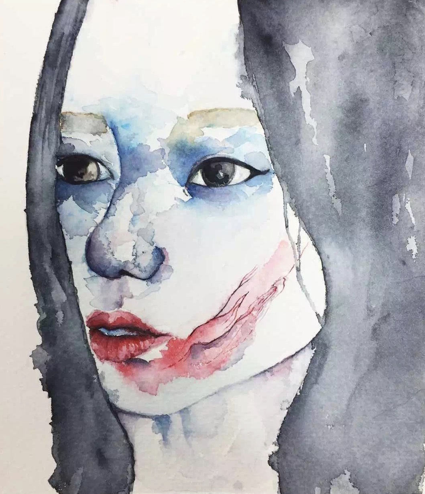

<
About me

About me
My name is Rachel Jin, 21 years old. I was born in Suzhou,
China and I lived in UK for two years.
I am currently a second
-year student, who is majoring in Communication Design at
Parsons School of Design.
I am making this website specially for my Creative Computing
Course, where I will be learning all the website design skills.
I will keep upadating all my projects and works here to record
and also improve my skill.
If you are interested, please keep paying attention to the website.
You are also very welcome to give any advice if you'd like.